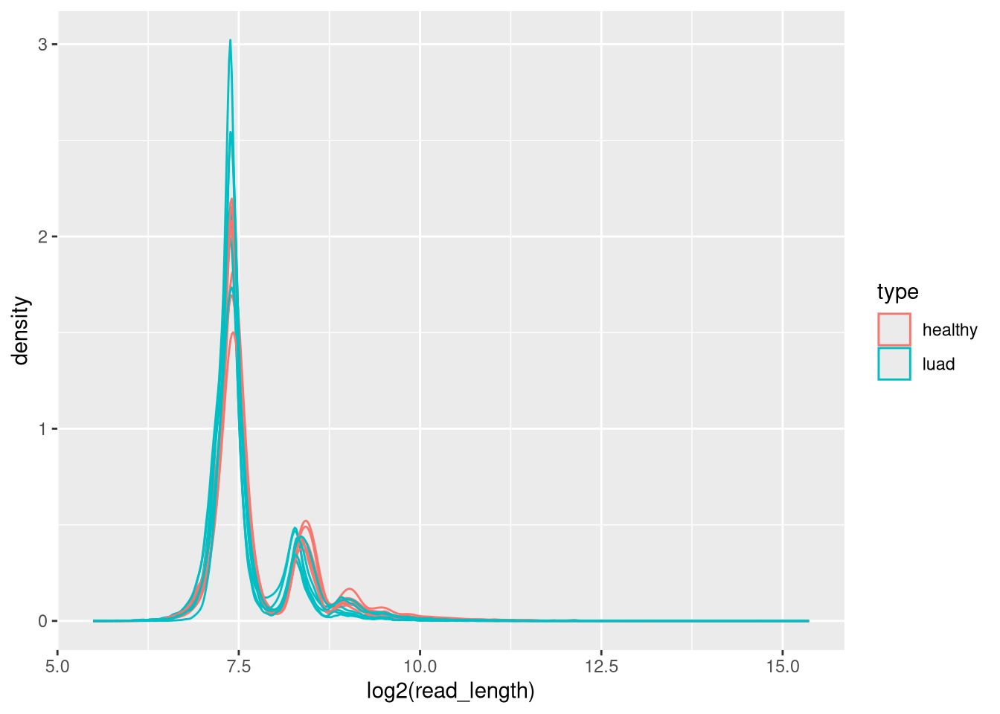

alphaAnalysis
caitlinpage
2025-09-08
Last updated: 2025-09-24
Checks: 7 0
Knit directory: methyl_nano_cf/
This reproducible R Markdown analysis was created with workflowr (version 1.7.1). The Checks tab describes the reproducibility checks that were applied when the results were created. The Past versions tab lists the development history.
Great! Since the R Markdown file has been committed to the Git repository, you know the exact version of the code that produced these results.
Great job! The global environment was empty. Objects defined in the global environment can affect the analysis in your R Markdown file in unknown ways. For reproduciblity it’s best to always run the code in an empty environment.
The command set.seed(20250606) was run prior to running
the code in the R Markdown file. Setting a seed ensures that any results
that rely on randomness, e.g. subsampling or permutations, are
reproducible.
Great job! Recording the operating system, R version, and package versions is critical for reproducibility.
Nice! There were no cached chunks for this analysis, so you can be confident that you successfully produced the results during this run.
Great job! Using relative paths to the files within your workflowr project makes it easier to run your code on other machines.
Great! You are using Git for version control. Tracking code development and connecting the code version to the results is critical for reproducibility.
The results in this page were generated with repository version 38b94f7. See the Past versions tab to see a history of the changes made to the R Markdown and HTML files.
Note that you need to be careful to ensure that all relevant files for
the analysis have been committed to Git prior to generating the results
(you can use wflow_publish or
wflow_git_commit). workflowr only checks the R Markdown
file, but you know if there are other scripts or data files that it
depends on. Below is the status of the Git repository when the results
were generated:
Ignored files:
Ignored: .Rhistory
Ignored: .Rproj.user/
Ignored: analysis/figure/
Ignored: renv.lock
Ignored: renv/
Untracked files:
Untracked: analysis/filteringReads.Rmd
Unstaged changes:
Modified: .Rprofile
Modified: .gitignore
Modified: analysis/binningGenome.Rmd
Modified: analysis/checkAlphaAndBetaMatch.Rmd
Modified: analysis/index.Rmd
Note that any generated files, e.g. HTML, png, CSS, etc., are not included in this status report because it is ok for generated content to have uncommitted changes.
These are the previous versions of the repository in which changes were
made to the R Markdown (analysis/alphaAnalysis.Rmd) and
HTML (docs/alphaAnalysis.html) files. If you’ve configured
a remote Git repository (see ?wflow_git_remote), click on
the hyperlinks in the table below to view the files as they were in that
past version.
| File | Version | Author | Date | Message |
|---|---|---|---|---|
| Rmd | 38b94f7 | caitlinpage | 2025-09-24 | wflow_publish("analysis/alphaAnalysis.Rmd") |
| Rmd | f3a8a14 | caitlinpage | 2025-09-08 | commit - making average alpha per position |
| Rmd | 4b951b9 | caitlinpage | 2025-09-08 | init commit |
Introduction
library(plyranges)Loading required package: BiocGenerics
Attaching package: 'BiocGenerics'The following objects are masked from 'package:stats':
IQR, mad, sd, var, xtabsThe following objects are masked from 'package:base':
anyDuplicated, aperm, append, as.data.frame, basename, cbind,
colnames, dirname, do.call, duplicated, eval, evalq, Filter, Find,
get, grep, grepl, intersect, is.unsorted, lapply, Map, mapply,
match, mget, order, paste, pmax, pmax.int, pmin, pmin.int,
Position, rank, rbind, Reduce, rownames, sapply, saveRDS, setdiff,
table, tapply, union, unique, unsplit, which.max, which.minLoading required package: IRangesLoading required package: S4VectorsLoading required package: stats4
Attaching package: 'S4Vectors'The following object is masked from 'package:utils':
findMatchesThe following objects are masked from 'package:base':
expand.grid, I, unnameLoading required package: GenomicRangesLoading required package: GenomeInfoDbWarning: replacing previous import 'S4Arrays::makeNindexFromArrayViewport' by
'DelayedArray::makeNindexFromArrayViewport' when loading 'SummarizedExperiment'
Attaching package: 'plyranges'The following object is masked from 'package:IRanges':
sliceThe following object is masked from 'package:stats':
filterlibrary(tidyr)
Attaching package: 'tidyr'The following object is masked from 'package:S4Vectors':
expandlibrary(dplyr)
Attaching package: 'dplyr'The following objects are masked from 'package:plyranges':
between, n, n_distinctThe following objects are masked from 'package:GenomicRanges':
intersect, setdiff, unionThe following object is masked from 'package:GenomeInfoDb':
intersectThe following objects are masked from 'package:IRanges':
collapse, desc, intersect, setdiff, slice, unionThe following objects are masked from 'package:S4Vectors':
first, intersect, rename, setdiff, setequal, unionThe following objects are masked from 'package:BiocGenerics':
combine, intersect, setdiff, unionThe following objects are masked from 'package:stats':
filter, lagThe following objects are masked from 'package:base':
intersect, setdiff, setequal, unionlibrary(ggplot2)all_samples <- readRDS("/researchers/caitlin.page/cf_nano/r_output/all_samples.rds")
overlap_bins_reads <- readRDS("/researchers/caitlin.page/cf_nano/r_output/overlap_bins_reads.rds")
cg_sites <- readRDS("/researchers/caitlin.page/cf_nano/r_output/cg_sites.rds")head(all_samples) read_id seqnames start end read_length
1 7f095597-d2c5-47a2-93aa-d84b7f9abc94 chr22 10521100 10521455 355
2 e9abf215-8192-48f4-a50f-ef92241e5de3 chr22 10522473 10522658 185
3 4203dd9d-9bff-4d14-b046-7716315e9699 chr22 10524645 10524786 141
4 baf45276-b37b-43fd-8a33-6727de6255fa chr22 10527072 10527210 138
5 a75ce5a8-42f2-4fe2-b62b-35aba109507d chr22 10529269 10529453 184
6 b5e822b7-e149-4ae2-8937-fe4d570a274e chr22 10534032 10534204 172
type sample index_cg meth_pattern
1 healthy hu5.10 48 T
2 healthy hu5.10 53 CCTT
3 healthy hu5.10 68 T
4 healthy hu5.10 299 CCCCCCCCCCCCCCCCC
5 healthy hu5.10 374 TT
6 healthy hu5.10 408 TT
cpg_positions
1 48
2 53,54,55,56
3 68
4 299,300,301,302,303,304,305,306,307,308,309,310,311,312,313,314,315
5 374,375
6 408,409
genom_positions
1 10521180
2 10522481,10522501,10522591,10522649
3 10524771
4 10527071,10527087,10527090,10527093,10527108,10527114,10527116,10527119,10527130,10527136,10527138,10527153,10527156,10527172,10527189,10527191,10527194
5 10529326,10529356
6 10534125,10534167
num_meth total alpha read_start read_end
1 0 1 0.0 10521100 10521455
2 2 4 0.5 10522473 10522658
3 0 1 0.0 10524645 10524786
4 17 17 1.0 10527072 10527210
5 0 2 0.0 10529269 10529453
6 0 2 0.0 10534032 10534204distribution of read lengths
all_samples %>%
ggplot(aes(x = log2(read_length), colour = type, group = sample)) +
geom_density()
all_samples %>%
ggplot(aes(x = sample, y = log2(read_length), fill = type)) +
geom_boxplot()
all_samples %>%
ggplot(aes(x = sample, y = log2(read_length), fill = type)) +
geom_violin()dsitribution of alpha values
all_samples %>%
ggplot(aes(x = alpha, colour = type, group = sample)) +
geom_density()all_samples %>%
ggplot(aes(x = sample, y = alpha, fill = type)) +
geom_boxplot()all_samples %>%
ggplot(aes(x = sample, y = alpha, fill = type)) +
geom_violin()all_samples %>% group_by(meth_pattern) %>% summarise(n=n(), length_pat = nchar(meth_pattern)) %>% distinct() %>% head()Warning: Returning more (or less) than 1 row per `summarise()` group was deprecated in
dplyr 1.1.0.
ℹ Please use `reframe()` instead.
ℹ When switching from `summarise()` to `reframe()`, remember that `reframe()`
always returns an ungrouped data frame and adjust accordingly.
Call `lifecycle::last_lifecycle_warnings()` to see where this warning was
generated.`summarise()` has grouped output by 'meth_pattern'. You can override using the
`.groups` argument.# A tibble: 6 × 3
# Groups: meth_pattern [6]
meth_pattern n length_pat
<chr> <int> <int>
1 C 134084 1
2 CC 87605 2
3 CCC 55411 3
4 CCCC 33896 4
5 CCCCC 21023 5
6 CCCCCC 12854 6all_samples %>% group_by(meth_pattern) %>% summarise(n=n(), length_pat = nchar(meth_pattern)) %>% distinct() %>%
ungroup() %>% group_by(length_pat) %>% summarise(n_length = n(), sum_length = sum(n)) %>% head()Warning: Returning more (or less) than 1 row per `summarise()` group was deprecated in
dplyr 1.1.0.
ℹ Please use `reframe()` instead.
ℹ When switching from `summarise()` to `reframe()`, remember that `reframe()`
always returns an ungrouped data frame and adjust accordingly.
Call `lifecycle::last_lifecycle_warnings()` to see where this warning was
generated.`summarise()` has grouped output by 'meth_pattern'. You can override using the
`.groups` argument.# A tibble: 6 × 3
length_pat n_length sum_length
<int> <int> <int>
1 1 2 195617
2 2 4 157624
3 3 8 115395
4 4 16 81183
5 5 32 56598
6 6 64 39430all_samples %>% group_by(meth_pattern) %>% summarise(n=n(), length_pat = nchar(meth_pattern)) %>% distinct() %>%
ungroup() %>% group_by(length_pat) %>% summarise(n_length = n(), sum_length = sum(n)) %>%
ggplot(aes(x = length_pat, y = n_length)) +
geom_point()Warning: Returning more (or less) than 1 row per `summarise()` group was deprecated in
dplyr 1.1.0.
ℹ Please use `reframe()` instead.
ℹ When switching from `summarise()` to `reframe()`, remember that `reframe()`
always returns an ungrouped data frame and adjust accordingly.
Call `lifecycle::last_lifecycle_warnings()` to see where this warning was
generated.`summarise()` has grouped output by 'meth_pattern'. You can override using the
`.groups` argument.all_samples %>% group_by(meth_pattern) %>% summarise(n=n(), length_pat = nchar(meth_pattern)) %>% distinct() %>%
ungroup() %>% group_by(length_pat) %>% summarise(n_length = n(), sum_length = sum(n)) %>%
ggplot(aes(x = length_pat, y = sum_length)) +
geom_point()Warning: Returning more (or less) than 1 row per `summarise()` group was deprecated in
dplyr 1.1.0.
ℹ Please use `reframe()` instead.
ℹ When switching from `summarise()` to `reframe()`, remember that `reframe()`
always returns an ungrouped data frame and adjust accordingly.
Call `lifecycle::last_lifecycle_warnings()` to see where this warning was
generated.`summarise()` has grouped output by 'meth_pattern'. You can override using the
`.groups` argument.* plot 1 is how many patterns have the same length? 2 patterns of length 1: either C or T etc (pattern length is same as number of cpgs in read) * plot 2 is sum of the occurence of that pattern length
all_samples %>% group_by(meth_pattern) %>% summarise(n=n(), length_pat = nchar(meth_pattern)) %>% distinct() %>%
ungroup() %>% group_by(length_pat) %>% summarise(n_length = n(), sum_length = sum(n)) %>%
ggplot(aes(x = length_pat, y = n_length)) +
geom_point() +
scale_x_continuous(limits = c(0,100)) +
labs(title = "zoom in on plot 1")Warning: Returning more (or less) than 1 row per `summarise()` group was deprecated in
dplyr 1.1.0.
ℹ Please use `reframe()` instead.
ℹ When switching from `summarise()` to `reframe()`, remember that `reframe()`
always returns an ungrouped data frame and adjust accordingly.
Call `lifecycle::last_lifecycle_warnings()` to see where this warning was
generated.`summarise()` has grouped output by 'meth_pattern'. You can override using the
`.groups` argument.Warning: Removed 130 rows containing missing values or values outside the scale range
(`geom_point()`).summary(all_samples$total) Min. 1st Qu. Median Mean 3rd Qu. Max.
1.000 1.000 3.000 4.083 5.000 612.000 summary(unique(all_samples$total)) Min. 1st Qu. Median Mean 3rd Qu. Max.
1.00 58.25 115.50 134.14 179.50 612.00 summary(nchar(all_samples$meth_pattern)) Min. 1st Qu. Median Mean 3rd Qu. Max.
1.000 1.000 3.000 4.083 5.000 612.000 summary(unique(nchar(all_samples$meth_pattern))) Min. 1st Qu. Median Mean 3rd Qu. Max.
1.00 58.25 115.50 134.14 179.50 612.00 - see total (num cpgs in read) as same as length of pattern
all_samples %>% group_by(meth_pattern, total, type) %>% summarise(n=n()) %>% group_by(type) %>% mutate(prop_pattern_in_type = n/sum(n)) %>% .[order(.$prop_pattern_in_type, decreasing = TRUE),] %>% head()`summarise()` has grouped output by 'meth_pattern', 'total'. You can override
using the `.groups` argument.# A tibble: 6 × 5
# Groups: type [2]
meth_pattern total type n prop_pattern_in_type
<chr> <int> <chr> <int> <dbl>
1 C 1 luad 89710 0.181
2 C 1 healthy 44374 0.169
3 CC 2 luad 57911 0.117
4 CC 2 healthy 29694 0.113
5 T 1 luad 42885 0.0865
6 CCC 3 luad 36432 0.0734the highest proportion of patterns are basically the same for healthy and luad
only use patterns with at least 3 cpgs
all_samples %>% group_by(meth_pattern, total, type) %>% summarise(n=n()) %>% filter(total >= 3) %>% group_by(type) %>% mutate(prop_pattern_in_type = n/sum(n)) %>% .[order(.$prop_pattern_in_type, decreasing = TRUE),] %>% head()`summarise()` has grouped output by 'meth_pattern', 'total'. You can override
using the `.groups` argument.# A tibble: 6 × 5
# Groups: type [2]
meth_pattern total type n prop_pattern_in_type
<chr> <int> <chr> <int> <dbl>
1 CCC 3 luad 36432 0.141
2 CCC 3 healthy 18979 0.129
3 CCCC 4 luad 22076 0.0855
4 CCCC 4 healthy 11820 0.0803
5 CCCCC 5 luad 13521 0.0524
6 CCCCC 5 healthy 7502 0.0510all_samples %>% filter(meth_pattern == "CCC") %>% head() read_id seqnames start end read_length
1 79095d4b-2efa-41ea-bc20-065f94af5a64 chr22 10685761 10685916 155
2 22315981-4e7d-4773-afa4-74bc5f442af8 chr22 10726898 10727097 199
3 24f2ddfe-ba0e-4a98-b810-c6b8bb03267b chr22 10757086 10757241 155
4 e3744c2b-ec90-4d70-97c2-b55785992b82 chr22 10761008 10761147 139
5 4cb56780-8d66-452a-8580-ba2cf4580a1b chr22 10761026 10761179 153
6 8dcc8e94-87b7-4c18-9f68-0a1e94c716b2 chr22 10778755 10779078 323
type sample index_cg meth_pattern cpg_positions
1 healthy hu5.10 1687 CCC 1687,1688,1689
2 healthy hu5.10 2250 CCC 2250,2251,2252
3 healthy hu5.10 2674 CCC 2674,2675,2676
4 healthy hu5.10 2709 CCC 2709,2710,2711
5 healthy hu5.10 2709 CCC 2709,2710,2711
6 healthy hu5.10 2854 CCC 2854,2855,2856
genom_positions num_meth total alpha read_start read_end
1 10685792,10685899,10685903 3 3 1 10685761 10685916
2 10726969,10727035,10727074 3 3 1 10726898 10727097
3 10757108,10757184,10757190 3 3 1 10757086 10757241
4 10761048,10761133,10761141 3 3 1 10761008 10761147
5 10761048,10761133,10761141 3 3 1 10761026 10761179
6 10778789,10778830,10778963 3 3 1 10778755 10779078all_samples %>% filter(total >= 3, total <= 10) %>% distinct(meth_pattern, alpha) %>% head() meth_pattern alpha
1 CCTT 0.5000000
2 TTT 0.0000000
3 CTC 0.6666667
4 CCCCT 0.8000000
5 TTCT 0.2500000
6 CCCC 1.0000000- what am I trying to do?
- was it like the entropy thing? because that would be in a region and then looking at what patterns occur
- I guess was also wondering what patterns occur the most - and if there were any cancer specific
overlap_bins_reads %>% filter(bin_num == 3780) %>% group_by(meth_pattern, total) %>% summarise(num_times = n()) %>% ungroup() %>% mutate(prop = num_times/sum(num_times)) %>% .[order(.$prop, decreasing = TRUE),] %>% head()`summarise()` has grouped output by 'meth_pattern'. You can override using the
`.groups` argument.# A tibble: 6 × 4
meth_pattern total num_times prop
<chr> <int> <int> <dbl>
1 C 1 328 0.339
2 T 1 136 0.140
3 CC 2 93 0.0961
4 TC 2 41 0.0424
5 CT 2 34 0.0351
6 TT 2 16 0.0165overlap_bins_reads %>% filter(bin_num == 3780) %>% group_by(meth_pattern, total, alpha, type) %>% summarise(num_times = n()) %>% ungroup() %>% group_by(type) %>% mutate(prop = num_times/sum(num_times)) %>% .[order(.$prop, decreasing = TRUE),] %>% head()`summarise()` has grouped output by 'meth_pattern', 'total', 'alpha'. You can
override using the `.groups` argument.# A tibble: 6 × 6
# Groups: type [2]
meth_pattern total alpha type num_times prop
<chr> <int> <dbl> <chr> <int> <dbl>
1 C 1 1 luad 229 0.369
2 C 1 1 healthy 99 0.285
3 T 1 0 luad 94 0.151
4 T 1 0 healthy 42 0.121
5 CC 2 1 healthy 36 0.104
6 CC 2 1 luad 57 0.0918- maybe question is: what are the alphas of the meth patterns that occur most frequently?
- and are they more centered at 0 and 1 than the least frequent meth patterns?
overlap_bins_reads %>% filter(bin_num == 3780) %>% group_by(meth_pattern, total, alpha, type) %>% summarise(num_times = n()) %>% ungroup() %>% group_by(type) %>% mutate(prop = num_times/sum(num_times)) %>% .[order(.$prop, decreasing = TRUE),] %>%
ggplot(aes(x = alpha, y = prop, colour = type)) +
geom_point() +
geom_line()`summarise()` has grouped output by 'meth_pattern', 'total', 'alpha'. You can
override using the `.groups` argument.* yes - highest props are at 0 and 1 and then 0.5
but this is likely biased to meth pattern =0/1 because only a c or a t
at least 3 cpg on read
overlap_bins_reads %>% filter(bin_num == 3780, total >= 3) %>% group_by(meth_pattern, total, alpha, type) %>% summarise(num_times = n()) %>% ungroup() %>% group_by(type) %>% mutate(prop = num_times/sum(num_times)) %>% .[order(.$prop, decreasing = TRUE),] %>%
ggplot(aes(x = alpha, y = prop, colour = type)) +
geom_point() +
geom_line()`summarise()` has grouped output by 'meth_pattern', 'total', 'alpha'. You can
override using the `.groups` argument.* props change quite a bit * also this is all specific to just one bin * is this interesting? - no clue
all_samples[1:10,] read_id seqnames start end read_length
1 7f095597-d2c5-47a2-93aa-d84b7f9abc94 chr22 10521100 10521455 355
2 e9abf215-8192-48f4-a50f-ef92241e5de3 chr22 10522473 10522658 185
3 4203dd9d-9bff-4d14-b046-7716315e9699 chr22 10524645 10524786 141
4 baf45276-b37b-43fd-8a33-6727de6255fa chr22 10527072 10527210 138
5 a75ce5a8-42f2-4fe2-b62b-35aba109507d chr22 10529269 10529453 184
6 b5e822b7-e149-4ae2-8937-fe4d570a274e chr22 10534032 10534204 172
7 8dd08ad7-e4df-431f-aa3a-71b2997ef046 chr22 10537405 10537724 319
8 f2126575-4306-42fe-a40f-9ea13798f81d chr22 10537537 10537896 359
9 188323d5-c832-4819-a396-256378a12c58 chr22 10540305 10540479 174
10 e7aa75c7-ca75-4127-885c-3a66df33217c chr22 10540592 10540761 169
type sample index_cg meth_pattern
1 healthy hu5.10 48 T
2 healthy hu5.10 53 CCTT
3 healthy hu5.10 68 T
4 healthy hu5.10 299 CCCCCCCCCCCCCCCCC
5 healthy hu5.10 374 TT
6 healthy hu5.10 408 TT
7 healthy hu5.10 462 T
8 healthy hu5.10 462 T
9 healthy hu5.10 474 C
10 healthy hu5.10 476 C
cpg_positions
1 48
2 53,54,55,56
3 68
4 299,300,301,302,303,304,305,306,307,308,309,310,311,312,313,314,315
5 374,375
6 408,409
7 462
8 462
9 474
10 476
genom_positions
1 10521180
2 10522481,10522501,10522591,10522649
3 10524771
4 10527071,10527087,10527090,10527093,10527108,10527114,10527116,10527119,10527130,10527136,10527138,10527153,10527156,10527172,10527189,10527191,10527194
5 10529326,10529356
6 10534125,10534167
7 10537632
8 10537632
9 10540347
10 10540628
num_meth total alpha read_start read_end
1 0 1 0.0 10521100 10521455
2 2 4 0.5 10522473 10522658
3 0 1 0.0 10524645 10524786
4 17 17 1.0 10527072 10527210
5 0 2 0.0 10529269 10529453
6 0 2 0.0 10534032 10534204
7 0 1 0.0 10537405 10537724
8 0 1 0.0 10537537 10537896
9 1 1 1.0 10540305 10540479
10 1 1 1.0 10540592 10540761all_samples %>% group_by(meth_pattern, type, sample) %>% summarise(n=n()) %>% head()`summarise()` has grouped output by 'meth_pattern', 'type'. You can override
using the `.groups` argument.# A tibble: 6 × 4
# Groups: meth_pattern, type [1]
meth_pattern type sample n
<chr> <chr> <chr> <int>
1 C healthy hu5.10 4357
2 C healthy hu5.11 5027
3 C healthy hu5.12 3509
4 C healthy ispro.bc2 5579
5 C healthy ispro.bc3 6499
6 C healthy ispro.bc4 7476how long is a piece of string? - what’s the longest for the same alpha
all_samples %>% distinct(meth_pattern, total, alpha) %>% .[order(.$total, decreasing = TRUE),] %>% mutate(num = 1:n()) %>% head() meth_pattern
21435 TCCCCTCCCCCCCCCCCCTCCCCCCCCCCTCCCTTCCCCCCCCCTCCCCCCCCCCCCCCCCCCCCCTCCCCCCCCCCCCCCCCCCTCCCCCCCCCCCCCCCCCTTTTTTTTCCCCCCCCCCCCCCCCTTCCCCCTCCCCCCCCCCCTCCCCCCCCCCCCTCCCCCCCCCCTTCCCCTCCTCCCCCCCCTCCCCCTTTTCTTCCCTCCCCCCCCCCCCCCCCTCCCCCCTCCCCCCCCCCCCCCCCCCCCCCCCCCCTTCTTTCCCCCCCCCTTCCCCCCCTCTCCCCTCCCCCCCCCCCCCCCCTCCCCCCCCTCCCCCCCCCTTCCCCCCTCCCCCCCCCCCCCCCCTCCCCTTCTCCCCCCCCCTCCCCTCTTTCCCCCCTCCCCCCCCCCCCCCCCCCCCCCCTCCCCTCTTTCCTCCCCCTTCCTCCCCCTCCCCCCCCCCTCCCCTCCCCCCTTCCCCCCCTCCCCCTCCCCCTCCTTCCTCCCCCTCCTCCCTTTTTCTTTCCTTTTTTTTTTTTTTTTCCCCTCCCCTCCTTCCCCTCCTCCCTCCTTCTTCCCCTCCCTTCCCCCCCCCCCCCCCTCCCCTTTCCCCTTCCTCTTTTTCTTTTC
16830 CCTTTTTTTTTTTTTTTTCTCTTTTTTTTCTTTTCCCCCCCTTCTTCTTCCCCCCCCCCCCTCCCCCCCTTCCCCCTTCCCCCCCCCCCCTCCCCCCCCCCCCCCTTCCCCCCCCCTCCCCCCCCCCCTCTCCCCCCCCCCCCCCCCCTCCTCCTCCCCCCTCCCCCCCCCCCCCCCCCCCTCCTCCCCCCCCCCCCCCCCCCCCCCCCCCCCTCTCCCCCCCCCCCCCCCCCCCCCCTCCCCCCCCCCCCCTCCCCCCCCCCCCCCCTCCCCCCCCCCCCCCCCCCCTCCCCCCCCCCCCCCCCCCCCCCCCCCCCCCTTTCCTCCCTCCCCCCCCCTCCCCCCCCCCCCCCCCCCCCCCCCCCCCCCCCCCCCTCCCCCCCCTCCCCCCCCCCCCCCCCCCCCCCCCCCCCTCCCCCCCCCCCCCCCCCCCCCCCCCCCCCCCCCTCCCTCTCCCCCTCCCCCCCCCTCCCTCCCTCCCCCCCCCCTCCCCCCCCCCCCCCCCCCCCCCCCCCCCCCCCCCC
20289 CTCCCCCCCCCCCCCTCCCCCCCCCCCCCCCCCCCCCCCCCCCCTCTCCCCCTCCCCCCCCCCCCCCCCCCCCCCCCCCCCCCCCCTCTCCCCCCCTCCCCCTCCCTCCCCCCCCCCCCCCCCCCCCCCCCCCCTCTCCCCCCCCCCCCCCCCCCCCCCCCCCCCCCCCCCCCCCCCCCTCCCCCCCCCCCTTCCCCCCCCCCCCCCCCTCCCCCCCCTTTTTTCCCCCCTCTCCCCCTTTCCCCCCCCCCCCCCCCCCCCCCCCCCCTTCCCTTCCCCCCCCCCCCCCCTCCCCCCCTCCCCTTTTTCCTCTTTCCCCCCCCCCCCCCCCCCCCCCCCCCCCCCCCCCCCCCCCCCTTTTTTTTCCTCCCCCCCCCTTTCCCCCCCCCTCCCTCCCCCCCCCCCCCTCCCCCCCCCCCCCCTCCCCCCCCCCTCTTTTTTTCCCCCCCCCCCCCTCCCCCCCCCCCCCCCCCCTCCCCCCCCCCTCCC
21352 TTTTTCCTCTTTCCTTCCCCCCCCTTCCCCCTTTTCTTCTTCCCCCCCCCTTCTCCCCCCTCCCTCCCCTTCCTCCTCCTTTCTCTCTCCCCCCCTTCTTTTCCCCCCCCTCTCCCCTTTTTTTTTTTTTTTTTTTTTTTCTTCTCCTCCCCTCCCCCCCCCTCTCTCCCCCCCCCCCCCCCCTTCCTCTCCCCCCCCCCCCCCTCTCCCCCCCTCCCTCCCCCCCTCCTTTCCCCCCCCCCCCCCTCCTCCTCTCTTCTTTCTTCTTTTTTTTTTTTCTTTTTTCTCTTTCCCCCTTCCCCCTCCCCCCCCCCCCCCCCCCCCCTCCCTTTTTCTTCCTTCCCCCTTCCTTCTTCCCCCCTCCCTTTCTTTTTTCTTCTTCTTTTTTTTTTTTTTTTTTTTTTTTTTTTTTTTTTTTTCCTTTTTTTCTTTTTTCTTTTTTTTTTTTTTTTTTTTTTTTTTTTTTTTTTCTTTTTTTTC
16987 CCCCTCTCCCCCCCCCCTCCCCCCCCCTCCCCCCCCCCCCCTTTCCCCCCCCCCCCCCCCCCTCCCCCCCTCCCTCCTCCCCCCCCCCCCCCCCCCCCTCCCTCCCCTCCCCCCCCCCCCCCCCTCCCCCCCCCTCCCCCCCCCCCCCCTCCTCCCTCCCCTCCCCCCTCTCCCCCCTTCCCCCTTTCTTTTCCCTCCCCTCCCCTCCCCCCCCCCCCCCCTCCCCCCCCCTCCCCCCCCCCCCCCCTCTCCCCCTCTCCCCCCCCCCCCCCCCTCCCCCCCCCCCCCCCCCCCTCCCCCTTCCCTCCCCCCTCTCTCCCCTCCTCCTCCCCCCCTCCCCCCCCCCTCCCCCCCCCTCCCCCCCCCCCCCTCCTCCCCCCCTCCTCCCCCCCCCCCTCCCCTCCCCCTTCCCCCCCCCCCCCCCCTCCCTCCCCCCTCCCCCTCCTTTCCCCCCCCCCCCCT
20165 CTCCCCCCCCCCCCCCCCCCCCCTTCTCCCCCCCCCCTCCCCCCCCCCTCCCCCCCCTCCCCCCCCCCCCCCCTCCCCCCCCCCCCCCCCCCCCCCCCCCCCCCTCCCCCCCCCCCCCCCCTCCCCCCCCCCCCTTCCCCCCCCCCCCCCCCTCCTTTCCCTCCTCCCCCCCCCCCCCCCCCCCCCCCCCCTCCCCCCCCCCTCTCCCCCCCCCCCCCCCCCCCCCCCCCCCCCCCTCCTCTTCCCCCCCCCCCCCCCTCTCCCCCCCCTTCCTCCCCCCTCCCTTCCCCCCTCCCCCCCCTCTCCCCCTCCCCTTCCCCCTCCCCTCTCCCTCCTCCCCCCCTCCCCCTCCCCCCCCCCCCCCCCTCCTTCCCCTCCCCCT
total alpha num
21435 612 0.7761438 1
16830 524 0.8568702 2
20289 489 0.8588957 3
21352 480 0.4895833 4
16987 462 0.8484848 5
20165 382 0.8664921 6all_samples %>% distinct(meth_pattern, total, alpha) %>% .[order(.$total, decreasing = TRUE),] %>% mutate(num = 1:n()) %>% filter(alpha == 1 | alpha == 0) %>% head() meth_pattern total
1 TTTTTTTTTTTTTTTTTTTTTTTTTTTTTTTTTTTTTTTTTTTTTTTTTTTTTTTTTTTTTTTTTTTTTT 70
2 CCCCCCCCCCCCCCCCCCCCCCCCCCCCCCCCCCCCCCCCCCCCCCCCCCCCCCCCCCCCCCCCCCCC 68
3 TTTTTTTTTTTTTTTTTTTTTTTTTTTTTTTTTTTTTTTTTTTTTTTTTTTTTTTTTTTTT 61
4 TTTTTTTTTTTTTTTTTTTTTTTTTTTTTTTTTTTTTTTTTTTTTTTTTTTTTTTTTTT 59
5 TTTTTTTTTTTTTTTTTTTTTTTTTTTTTTTTTTTTTTTTTTTTTTTTTTTTTTTTTT 58
6 TTTTTTTTTTTTTTTTTTTTTTTTTTTTTTTTTTTTTTTTTTTTTTTTTTTTTTTTT 57
alpha num
1 0 711
2 1 764
3 0 969
4 0 1062
5 0 1094
6 0 1138- longest is 70 unmethylated cpgs
- then 68 methylated cpgs
- 7/10 in top 10 are unmethylated strings - interesting
all_samples %>% group_by(meth_pattern, total, alpha) %>% summarise(n_times = n()) %>% ungroup() %>% .[order(.$total, decreasing = TRUE),] %>% mutate(num = 1:n()) %>% filter(alpha == 1 | alpha == 0) %>% head()`summarise()` has grouped output by 'meth_pattern', 'total'. You can override
using the `.groups` argument.# A tibble: 6 × 5
meth_pattern total alpha n_times num
<chr> <int> <dbl> <int> <int>
1 TTTTTTTTTTTTTTTTTTTTTTTTTTTTTTTTTTTTTTTTTTTTTTTTTTT… 70 0 2 728
2 CCCCCCCCCCCCCCCCCCCCCCCCCCCCCCCCCCCCCCCCCCCCCCCCCCC… 68 1 1 748
3 TTTTTTTTTTTTTTTTTTTTTTTTTTTTTTTTTTTTTTTTTTTTTTTTTTT… 61 0 2 991
4 TTTTTTTTTTTTTTTTTTTTTTTTTTTTTTTTTTTTTTTTTTTTTTTTTTT… 59 0 1 1065
5 TTTTTTTTTTTTTTTTTTTTTTTTTTTTTTTTTTTTTTTTTTTTTTTTTTT… 58 0 1 1111
6 TTTTTTTTTTTTTTTTTTTTTTTTTTTTTTTTTTTTTTTTTTTTTTTTTTT… 57 0 2 1156- unsurprisingly - they are rare
are there any meth patterns that happen in only cancer or only normal?
all_samples %>% group_by(type) %>% distinct(meth_pattern) %>% ungroup() %>% group_by(meth_pattern) %>% mutate(n_groups = n()) %>% ungroup() %>% filter(n_groups == 1) %>% group_by(type) %>% summarise(n_unique = n())# A tibble: 2 × 2
type n_unique
<chr> <int>
1 healthy 8518
2 luad 10866- can’t remember what alicia was talking about
- it was something to do with an average
- but alpha is already basically an average as well as prop (if you say meth is 1 and unmeth is 0 - you count the meth and divide by total)
- oh it was a per position thing - like each site has a value that is the average of the alphas that span the site
- we wanted to then compare it to beta - except something is wrong with beta
cg_sites[1:10,] pos seqnames start end width seq index
1 chr22-10510235 chr22 10510235 10510236 2 CG 1
2 chr22-10510275 chr22 10510275 10510276 2 CG 2
3 chr22-10510284 chr22 10510284 10510285 2 CG 3
4 chr22-10510338 chr22 10510338 10510339 2 CG 4
5 chr22-10510437 chr22 10510437 10510438 2 CG 5
6 chr22-10510532 chr22 10510532 10510533 2 CG 6
7 chr22-10511578 chr22 10511578 10511579 2 CG 7
8 chr22-10511696 chr22 10511696 10511697 2 CG 8
9 chr22-10511893 chr22 10511893 10511894 2 CG 9
10 chr22-10512048 chr22 10512048 10512049 2 CG 10av_alpha <- all_samples %>% separate_rows(genom_positions, sep = ",")av_alpha %>% group_by(genom_positions) %>% summarise(av_alpha = mean(alpha), median_alpha = median(alpha), sd_alpha = sd(alpha)) %>% head()# A tibble: 6 × 4
genom_positions av_alpha median_alpha sd_alpha
<chr> <dbl> <dbl> <dbl>
1 10510235 0.307 0.25 0.282
2 10510275 0.346 0.292 0.275
3 10510284 0.346 0.292 0.275
4 10510338 0.275 0.25 0.247
5 10510437 0.3 0.3 0.424
6 10510532 0.5 0.5 0.707- I need the betas to compare against
all_samples[1:10,] read_id seqnames start end read_length
1 7f095597-d2c5-47a2-93aa-d84b7f9abc94 chr22 10521100 10521455 355
2 e9abf215-8192-48f4-a50f-ef92241e5de3 chr22 10522473 10522658 185
3 4203dd9d-9bff-4d14-b046-7716315e9699 chr22 10524645 10524786 141
4 baf45276-b37b-43fd-8a33-6727de6255fa chr22 10527072 10527210 138
5 a75ce5a8-42f2-4fe2-b62b-35aba109507d chr22 10529269 10529453 184
6 b5e822b7-e149-4ae2-8937-fe4d570a274e chr22 10534032 10534204 172
7 8dd08ad7-e4df-431f-aa3a-71b2997ef046 chr22 10537405 10537724 319
8 f2126575-4306-42fe-a40f-9ea13798f81d chr22 10537537 10537896 359
9 188323d5-c832-4819-a396-256378a12c58 chr22 10540305 10540479 174
10 e7aa75c7-ca75-4127-885c-3a66df33217c chr22 10540592 10540761 169
type sample index_cg meth_pattern
1 healthy hu5.10 48 T
2 healthy hu5.10 53 CCTT
3 healthy hu5.10 68 T
4 healthy hu5.10 299 CCCCCCCCCCCCCCCCC
5 healthy hu5.10 374 TT
6 healthy hu5.10 408 TT
7 healthy hu5.10 462 T
8 healthy hu5.10 462 T
9 healthy hu5.10 474 C
10 healthy hu5.10 476 C
cpg_positions
1 48
2 53,54,55,56
3 68
4 299,300,301,302,303,304,305,306,307,308,309,310,311,312,313,314,315
5 374,375
6 408,409
7 462
8 462
9 474
10 476
genom_positions
1 10521180
2 10522481,10522501,10522591,10522649
3 10524771
4 10527071,10527087,10527090,10527093,10527108,10527114,10527116,10527119,10527130,10527136,10527138,10527153,10527156,10527172,10527189,10527191,10527194
5 10529326,10529356
6 10534125,10534167
7 10537632
8 10537632
9 10540347
10 10540628
num_meth total alpha read_start read_end
1 0 1 0.0 10521100 10521455
2 2 4 0.5 10522473 10522658
3 0 1 0.0 10524645 10524786
4 17 17 1.0 10527072 10527210
5 0 2 0.0 10529269 10529453
6 0 2 0.0 10534032 10534204
7 0 1 0.0 10537405 10537724
8 0 1 0.0 10537537 10537896
9 1 1 1.0 10540305 10540479
10 1 1 1.0 10540592 10540761
sessionInfo()R version 4.4.1 (2024-06-14)
Platform: x86_64-pc-linux-gnu
Running under: Red Hat Enterprise Linux 9.5 (Plow)
Matrix products: default
BLAS/LAPACK: FlexiBLAS OPENBLAS-OPENMP; LAPACK version 3.9.0
locale:
[1] LC_CTYPE=en_AU.UTF-8 LC_NUMERIC=C
[3] LC_TIME=en_AU.UTF-8 LC_COLLATE=en_AU.UTF-8
[5] LC_MONETARY=en_AU.UTF-8 LC_MESSAGES=en_AU.UTF-8
[7] LC_PAPER=en_AU.UTF-8 LC_NAME=C
[9] LC_ADDRESS=C LC_TELEPHONE=C
[11] LC_MEASUREMENT=en_AU.UTF-8 LC_IDENTIFICATION=C
time zone: Australia/Melbourne
tzcode source: system (glibc)
attached base packages:
[1] stats4 stats graphics grDevices datasets utils methods
[8] base
other attached packages:
[1] ggplot2_3.5.2 dplyr_1.1.4 tidyr_1.3.1
[4] plyranges_1.26.0 GenomicRanges_1.58.0 GenomeInfoDb_1.42.3
[7] IRanges_2.40.1 S4Vectors_0.44.0 BiocGenerics_0.52.0
[10] workflowr_1.7.1
loaded via a namespace (and not attached):
[1] tidyselect_1.2.1 farver_2.1.2
[3] Biostrings_2.74.1 bitops_1.0-9
[5] fastmap_1.2.0 RCurl_1.98-1.17
[7] GenomicAlignments_1.42.0 promises_1.3.3
[9] XML_3.99-0.18 digest_0.6.37
[11] lifecycle_1.0.4 processx_3.8.6
[13] magrittr_2.0.3 compiler_4.4.1
[15] rlang_1.1.6 sass_0.4.10
[17] tools_4.4.1 utf8_1.2.6
[19] yaml_2.3.10 rtracklayer_1.66.0
[21] knitr_1.50 S4Arrays_1.6.0
[23] labeling_0.4.3 curl_6.4.0
[25] DelayedArray_0.32.0 RColorBrewer_1.1-3
[27] abind_1.4-8 BiocParallel_1.40.2
[29] withr_3.0.2 purrr_1.1.0
[31] grid_4.4.1 git2r_0.36.2
[33] scales_1.4.0 SummarizedExperiment_1.36.0
[35] cli_3.6.5 rmarkdown_2.29
[37] crayon_1.5.3 generics_0.1.4
[39] rstudioapi_0.17.1 httr_1.4.7
[41] rjson_0.2.23 cachem_1.1.0
[43] stringr_1.5.1 zlibbioc_1.52.0
[45] parallel_4.4.1 BiocManager_1.30.26
[47] XVector_0.46.0 restfulr_0.0.16
[49] matrixStats_1.5.0 vctrs_0.6.5
[51] Matrix_1.7-0 jsonlite_2.0.0
[53] callr_3.7.6 jquerylib_0.1.4
[55] glue_1.8.0 codetools_0.2-20
[57] ps_1.9.1 stringi_1.8.7
[59] gtable_0.3.6 later_1.4.2
[61] BiocIO_1.16.0 UCSC.utils_1.2.0
[63] tibble_3.3.0 pillar_1.11.0
[65] htmltools_0.5.8.1 GenomeInfoDbData_1.2.13
[67] R6_2.6.1 rprojroot_2.1.0
[69] evaluate_1.0.4 lattice_0.22-6
[71] Biobase_2.66.0 Rsamtools_2.22.0
[73] renv_1.1.5 httpuv_1.6.16
[75] bslib_0.9.0 Rcpp_1.1.0
[77] SparseArray_1.6.2 whisker_0.4.1
[79] xfun_0.52 fs_1.6.6
[81] MatrixGenerics_1.18.1 getPass_0.2-4
[83] pkgconfig_2.0.3